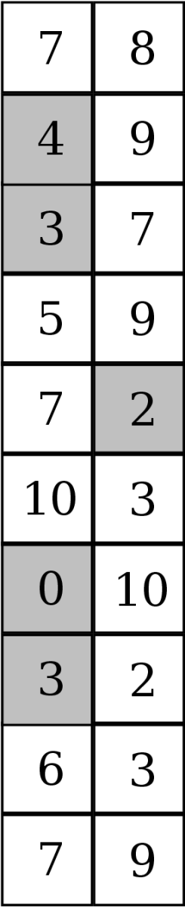

 Một triển lãm tranh gồm 2N phòng tranh được bố trí theo hình chữ nhật gồm N hàng, mỗi hàng 2 căn phòng sát nhau (hình bên). Từ một phòng có cửa để đi qua các phòng bên cạnh (trái, phải, trên, dưới, không đi chéo). Phòng tranh ở hàng i cột j có giá trị thưởng thức là vij. Du khách tham quan phải bắt đầu bước vào ở một trong hai phòng tranh ở hàng 1, đi qua các phòng và đi ra ở một trong hai phòng tranh ở hàng N.
Do cắt giảm nhân sự nên ban quản lý quyết định đóng cửa k căn phòng. Tuy nhiên phải đảm bảo được lối đi từ lúc vào đến lúc ra cho du khách. Bạn hãy giúp ban quản lý tính thử xem cần phải đóng cửa k phòng tranh nào để tổng giá trị thưởng thức của các phòng tranh còn lại là lớn nhất.
Dữ liệu nhập:
- Dòng đầu tiên là hai số nguyên N và k (3 ≤ N ≤ 200, 0 ≤ k ≤ N).
- Trong N dòng tiếp theo, dòng thứ i gồm hai số nguyên vi1 và vi2 là giá trị thưởng thức của 2 phòng tranh tương ứng ở hàng thứ i. (0 ≤ vij ≤ 100).
Dữ liệu xuất:
- Là số nguyên xác định giá trị thưởng thức lớn nhất sau khi đã đóng cửa k phòng tranh.
Nguồn: ACM-ICPC Asia Tokyo 2014 Regional Contest